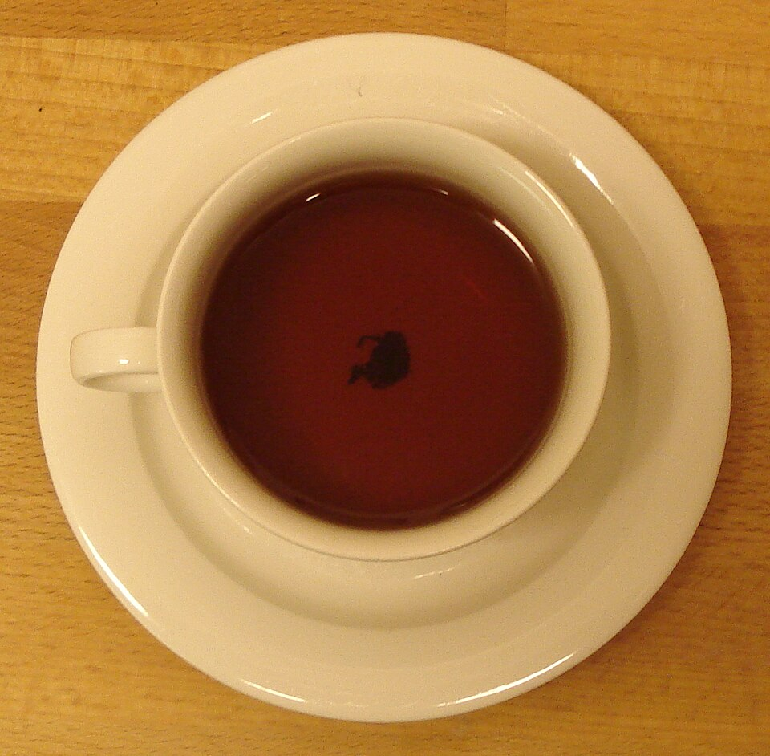
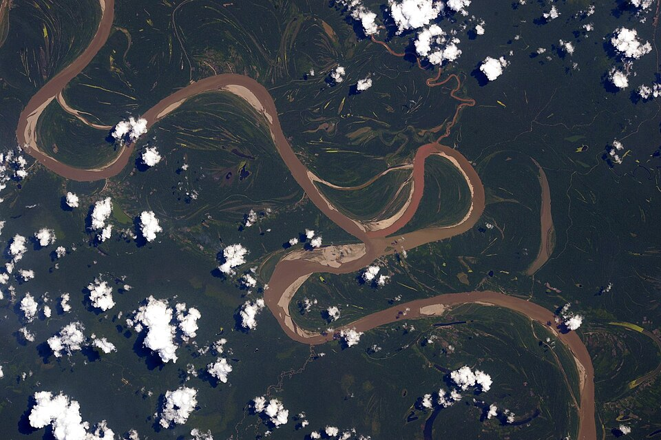

El flujo secundario que junta las hojas y curva los ríos
Revolvé una taza de té con hojas sueltas y mirá el fondo cuando dejás de revolver. Uno esperaría que las hojas, más pesadas que el agua, salieran despedidas hacia los bordes, como la ropa en un lavarropas que centrifuga. Pero se juntan en un montoncito en el centro del fondo. En 1926, Albert Einstein usó esta taza para explicar algo mucho más grande: por qué los ríos forman curvas.
El 7 de enero de 1926, Einstein leyó ante la Academia Prusiana un trabajo sobre la causa de la formación de los meandros de los ríos, publicado ese año en Die Naturwissenschaften [1][2]. Según la traducción al español de Enrique Padilla, Birgit Emberger y Manuel Díez-Minguito, Einstein proponía un experimento que cualquiera puede repetir [1]:

La clave está en la fricción. Cuando el té gira, la fuerza centrífuga empuja el líquido hacia afuera y la superficie se curva: queda más baja en el centro y más alta junto a las paredes [3]. Eso crea una diferencia de presión que, en el cuerpo del líquido, equilibra justo la fuerza centrífuga [3]. Pero, como explica Einstein, cerca de las paredes y del fondo el movimiento del líquido es retenido por la fricción, y circula más despacio que más adentro [1].
Zurab Silagadze, del Instituto Budker de Novosibirsk, lo explica así: en la capa de líquido frenada junto al fondo, la fuerza centrífuga es menor, pero la diferencia de presión es la misma, así que ya no se equilibran, y el líquido del fondo se mueve hacia el centro [3]. Para cerrar el circuito, el líquido sube por el centro, se aleja del centro cerca de la superficie y baja junto a las paredes [3]. Es un flujo secundario, un movimiento circular que se suma al giro principal. Y, según Einstein, las hojas de té son barridas hacia el centro por ese movimiento y actúan como prueba de su existencia [1].
El tobogán al revés: imaginá que el té, al girar, arma una rampa invisible de presión que empuja todo hacia el centro, y que la fuerza centrífuga empuja hacia afuera con la misma fuerza. En el cuerpo del té, las dos se empatan. Abajo, donde el fondo frena el giro, la fuerza centrífuga pierde y la rampa gana: el agua del fondo «cae» hacia el centro, y lleva las hojas con ella.
Einstein usó la taza para entender los ríos. Recordaba que los geógrafos sabían que los ríos del hemisferio norte tienden a erosionar principalmente la orilla derecha, y los del sur, la izquierda: es la llamada ley de Baer [1]. Y razonaba que la erosión de una orilla tiene que ser más fuerte cuanto mayor sea la velocidad de la corriente cerca de ella [1].
En una curva del río pasa lo mismo que en la taza: una fuerza centrífuga empuja el agua hacia el exterior de la curva, pero es menor en el fondo, donde la fricción frena la corriente, y así se forma una circulación [1]. Según Einstein, esa circulación lleva las partes más rápidas del agua, las de arriba en el centro del cauce, hacia la orilla exterior, mientras que la otra orilla recibe agua lenta que viene del fondo; por eso la erosión es más intensa en la orilla exterior [1]. Aun donde el río no tiene curvas, la rotación de la Tierra produce, a través de la fuerza de Coriolis, una circulación parecida aunque más débil, y eso explica la ley de Baer [1]. Con esto, escribe, quedan dilucidadas las causas de la formación de los meandros [1]: una curva pequeña erosiona más su orilla exterior, y así la curva crece (una lectura del argumento de Einstein).

Ríos más grandes, curvas más largas: Einstein agrega dos detalles. El flujo secundario tarda en armarse, así que la erosión máxima ocurre un poco aguas abajo del punto de mayor curvatura, y los meandros avanzan en el sentido de la corriente [1]. Y cuanto mayor es la sección del río, más lentamente la fricción apaga el flujo secundario, así que la longitud de onda de los meandros crece con el tamaño del río [1].
Las hojas de té se juntan en el centro de la taza porque la fricción frena el líquido del fondo, y ahí la diferencia de presión gana a la fuerza centrífuga: aparece un flujo secundario que barre el fondo hacia el centro. Einstein mostró en 1926 que el mismo flujo, en las curvas de un río, lleva agua rápida hacia la orilla exterior, la erosiona y hace crecer los meandros.
Pregunta para la comunidad: Probá el experimento de Einstein con una taza, agua y unas hojas de té o yerba. ¿Las hojas se juntan en el centro? ¿Qué pasa si en vez de un fondo plano usás un vaso de fondo redondeado?